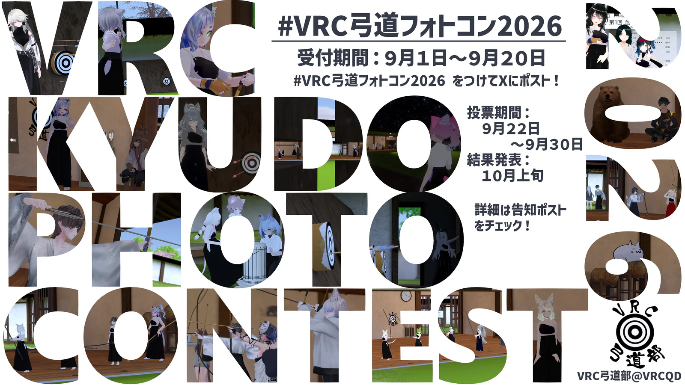

VRC弓道フォトコン2026 受賞作品発表
参加作品一覧（同じタブ） / Xで #VRC弓道フォトコン2026 を検索！
2026年「弓道の日（9月10日）」にあわせ、Xにてフォトコンテストを実施しました。
参加いただいた5作品の中から、一般投票で特に人気の高かった4作品を表彰いたします。
掲載作品 5有効投票 1受賞作品 4


全体へのコメント
- A全体コメント・再投票
スタッフより
主催者総評
E2E主催者総評
VRC弓道部 部長 伊予ハブ
E2E部長コメント
VRC弓道部 副部長 ぷちりゅう
E2E副部長コメント
主催：VRC弓道部（@VRCQD）［部長：伊予ハブ（@syuutingbe）、副部長：ぷちりゅう（@Puchiryuu_VRC）］
作品を投稿いただいた皆様へ
結果発表後、マイページからご自身の投稿作品の得票データを確認できます。公開設定に応じて、投票数およびコメントを表示します。
集計方法・順位表を表示
有効票数 1票
- 投票者は1人あたり1位から5位まで、5作品を選択します。同一作品への重複投票はできません。
- 1位から5位の投票に対して、それぞれ10・7・5・3・2ポイントを加算します。
- 最多得点作品1点、最多得票作品1点、および得点上位作品を選出します。
- 得点が同じ場合は1位得票数を比較し、以降2位から5位の得票数を順に比較します。すべて同じ場合は同順位とし、表示順は作品IDの昇順です。
| 順位 | 作品 | 得点 | 得票 | 1位 | 2位 | 3位 | 4位 | 5位 |
|---|---|---|---|---|---|---|---|---|
| 1 | E2E作品A2 修正確認 E2E参加者A / QD26-002 | 10 | 1 | 1 | 0 | 0 | 0 | 0 |
| 2 | E2E作品A1 更新確認 E2E参加者A / QD26-001 | 7 | 1 | 0 | 1 | 0 | 0 | 0 |
| 3 | E2E作品B1 E2E参加者B / QD26-004 | 5 | 1 | 0 | 0 | 1 | 0 | 0 |
| 4 | E2E作品B2 E2E参加者B / QD26-005 | 3 | 1 | 0 | 0 | 0 | 1 | 0 |
| 5 | E2E作品B3 E2E参加者B / QD26-006 | 2 | 1 | 0 | 0 | 0 | 0 | 1 |